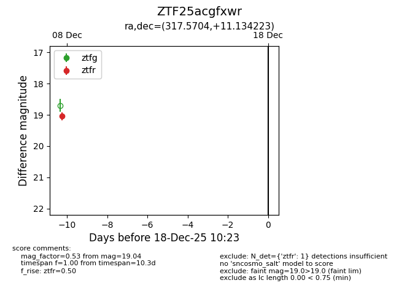
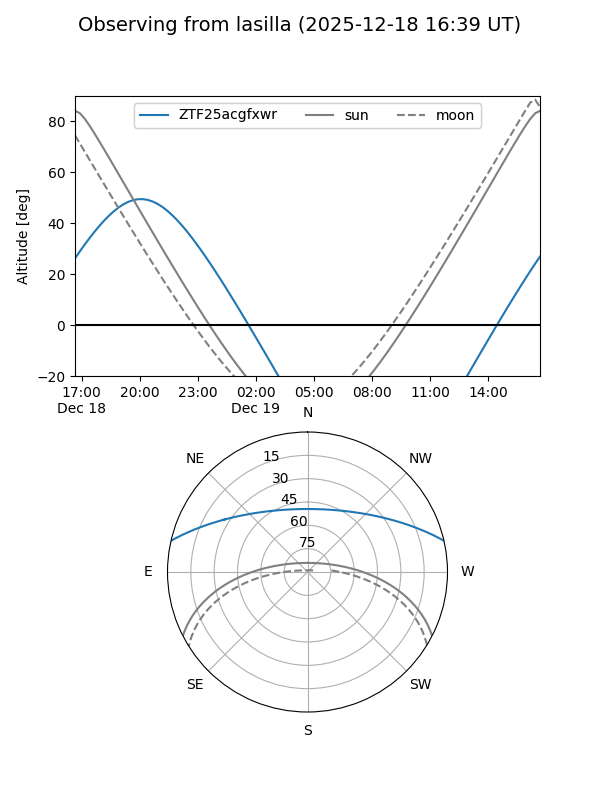
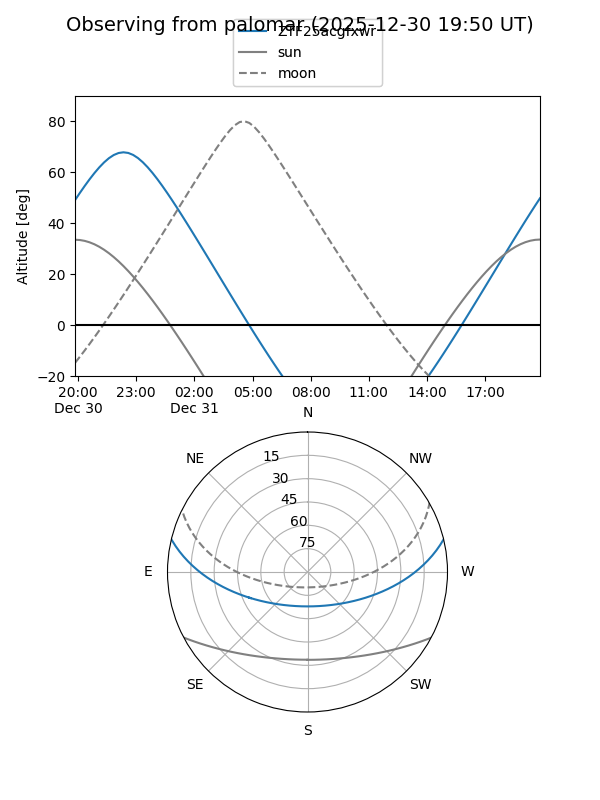

ZTF25acgfxwr
Target ZTF25acgfxwr at 2025-12-31 16:59
Aliases and brokers:
FINK:
Lasair:
ALeRCE:
alt names
ZTF25acgfxwr (ztf,fink_ztf)
Coordinates:
equatorial (ra, dec) = 317.5704,+11.13422
equatorial (HMS+DMS) = 21:10:16.90,+11:08:03.20
galactic (l, b) = (60.8085,-24.15450)
Flags:
Photometry:
last ztfr=19.04
1 ztfr detections
Lightcurve

Visibility


Additional plots